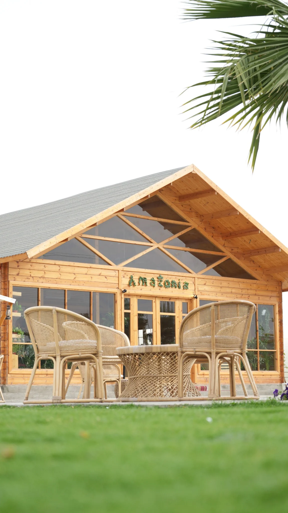

الإنتاج البصري
تصوير سينمائي، تصوير شارع، وتوثيق فوتوغرافي وتلفزيوني للفعاليات.
تصوير فوتوغرافي • صناعة أفلام • درون
أحوّل اللحظات والمواقع والأفكار إلى صور وفيديوهات عالية الجودة تناسب المنصات الرقمية ومخازن الفيديو العالمية.

خبرة واسعة في التقاط اللقطات السينمائية الشارعية، توثيق الفعاليات والمناظر، وإنتاج الفيديوهات الجوية. شغوف برواية القصص البصرية وتحويل الأفكار المفاهيمية إلى أصول رقمية عالية الجودة.

الرؤية البصرية
من تفاصيل المكان الصغيرة إلى المشاهد الجوية الواسعة، يركّز الأسلوب على الزوايا المبتكرة، الإحساس بالموقع، والمعالجة اللونية التي تعطي كل مشروع هوية واضحة.
معرض الأعمال
معرض سريع للأعمال المرفوعة. اضغط على أي صورة لعرضها بحجم أكبر.
الخدمات والمهارات
تصوير سينمائي، تصوير شارع، وتوثيق فوتوغرافي وتلفزيوني للفعاليات.
تشغيل الدرون والتقاط مشاهد بانورامية ديناميكية للمشاريع والمواقع.
تعامل احترافي مع كاميرات السينما، أنظمة الكاميرات كاملة الإطار ومثبتات الحركة.
مونتاج الفيديو، تعديل الألوان، ومعالجة الصور الرقمية بأسلوب سينمائي.
إنتاج وتصوير وتهيئة لقطات سينمائية عالية الجودة لمخازن الفيديو العالمية، وتوثيق فعاليات سياحية وثقافية وتراثية، وتنفيذ تصوير جوي دقيق للبنية التحتية والموانئ والمناطق التاريخية.
قنوات الفيديو
روابط مباشرة لقنوات الفيديو والمنصات الاجتماعية.
تواصل
للتعاون، التصوير، إنتاج الفيديو، أو طلب مواد أرشيفية عالية الجودة، تواصل عبر البريد أو المنصات التالية.
yngroup8@gmail.com